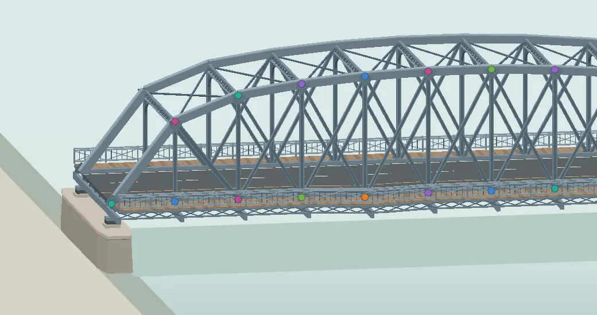

Desktop test · Waibaidu Bridge
Simulated inspection · Bridge walk
Point your phone at this screen. Start recording, then play the walk. Drag the bridge to change your viewpoint.

Loading the 3D bridge…
Desktop test · Waibaidu Bridge
Point your phone at this screen. Start recording, then play the walk. Drag the bridge to change your viewpoint.
